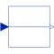
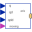

RealPassThroughPass a Real signal through without modification |

|
Information
This information is part of the Modelica Standard Library maintained by the Modelica Association.
Passes a Real signal through without modification. Enables signals to be read out of one bus, have their name changed and be sent back to a bus.
Connectors (2)
| u |
Type: RealInput Description: Connector of Real input signal |
|
|---|---|---|
| y |
Type: RealOutput Description: Connector of Real output signal |
Used in Components (2)
|
Modelica.Electrical.PowerConverters.ACDC.Control Generic control of 2*m pulse rectifiers |
|
|  |
Modelica.Mechanics.MultiBody.Examples.Systems.RobotR3.Components Map path planning to one axis control bus |